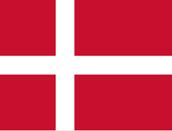

¿De qué se trató el Mundial de 1990?
La Copa Mundial de la FIFA 1990 fue la decimocuarta edición del torneo y se disputó en Italia entre el 8 de junio y el 8 de julio de 1990. Representó el regreso de la gran cita futbolística a suelo italiano después de 56 años, convirtiendo a Italia en el segundo país en organizar dos veces una Copa del Mundo. El evento estuvo impregnado de una atmósfera de gran vanguardia artística y operística, enmarcado en el auge del fútbol moderno y la reunificación inminente de la Europa geopolítica de finales del siglo XX.
El campeonato estuvo marcado por hitos institucionales de gran relevancia histórica. Se continuó utilizando el trofeo oficial estrenado en 1974: la Copa Mundial de la FIFA, diseñada por Silvio Gazzaniga. A nivel deportivo, el certamen asombró al planeta por su extremo rigor táctico, el predominio de los sistemas defensivos y la sorpresiva irrupción de potencias emergentes del fútbol africano. En el plano organizativo, se mantuvo el cupo de 24 selecciones participantes y el formato de eliminación directa desde los octavos de final instaurado en la edición previa. Sin embargo, el torneo pasó a la historia por registrar el promedio de gol más bajo de todos los tiempos, lo que empujó a la FIFA a realizar drásticos cambios reglamentarios en los años posteriores.
Italia organizó un certamen de máximo nivel logístico y monumentalidad arquitectónica. En el plano futbolístico, la selección de Alemania Federal, dirigida por el legendario Franz Beckenbauer, demostró una superioridad física y un despliegue colectivo demoledor. En la gran final, disputada en el Estadio Olímpico de Roma ante unos 73.000 espectadores, Alemania Federal derrotó a Argentina por 1-0 gracias a un polémico penalti en los minutos finales, cobrándose la revancha de la edición anterior.
Informacion que tenes que saber
Info general
- Pais Anfitrion: Italia
- Fecha de Inicio:
8 de Junio de 1990
(08/06/1990) - Fecha de Finalizacion:
8 de Julio de 1990
(08/07/1990) - Duracion: 30 dias
- Organizador: FIFA
- Edicion: XIV
Estadisticas
- Partidos jugados: 52
- Goles anotados: 115
- Promedio de gol: 2,21 (el más bajo de la historia)
- Máximo goleador:
Salvatore Schillaci
(6 goles) - Final:
Alemania Federal 1 - 0 Argentina
info de la Ciudad
- Ciudades Sede: 12
- Selecciones Participantes: 24
- Estadios Utilizados: 12
- Estadio Principal:
Estadio Olímpico (Roma)
Podio
| Posicion | Seleccion | Bandera |
|---|---|---|
| 1º Puesto | Alemania Federal |  |
| 2º Puesto | Argentina |  |
| 3º Puesto | Italia |  |
| 4º Puesto | Inglaterra |  |
(Nota: El tercer puesto se definió en un partido entre Italia e Inglaterra. Italia venció 2-1 al combinado inglés en el Estadio San Nicola de Bari).
Historia completa de la Copa Mundial de la FIFA 1990
La FIFA otorgó la organización de la Copa del Mundo a Italia en su congreso de 1984, imponiéndose en la votación final a la candidatura de la Unión Soviética. Para albergar la cita, el gobierno italiano ejecutó una colosal inversión económica destinada a modernizar y techar la mayoría de sus estadios. El torneo se disputó en medio de una intensa transformación del orden político mundial, siendo la última aparición en los mundiales de selecciones como la Unión Soviética, Checoslovaquia, Yugoslavia y la Alemania Federal antes de sus respectivas transiciones o unificaciones.
La fase de clasificación dejó fuera a equipos tradicionales como Francia y Dinamarca. En contrapartida, el certamen albergó los regresos de naciones como Colombia, Egipto y Costa Rica, siendo esta última —dirigida por Bora Milutinović— la gran sorpresa al avanzar a octavos de final tras vencer a Escocia y Suecia en su debut absoluto en territorio europeo.
Desarrollo del torneo
El partido inaugural tuvo lugar el 8 de junio en el Estadio San Siro de Milán, donde el campeón defensor, Argentina, sufrió un colapso histórico al caer 1-0 ante Camerún. Liderados por un veterano Roger Milla de 38 años, los "Leones Indomables" de Camerún desataron la fiesta africana al avanzar a los cuartos de final, firmando la mejor actuación de un equipo de su continente hasta ese momento. Por su parte, la anfitriona Italia cabalgó impulsada por los goles de un delantero inesperado, Salvatore "Totò" Schillaci, manteniendo su portería invicta durante cinco partidos consecutivos gracias a la solidez de su guardameta Walter Zenga.
La fase de eliminación directa estuvo cargada de drama y prórrogas. En octavos, Argentina eliminó a su clásico rival, Brasil, con un gol de Claudio Caniggia tras una brillante asistencia de Maradona. En semifinales, los duelos se transformaron en batallas épicas resueltas desde el punto de penalti: Argentina silenció Nápoles al eliminar a Italia en la tanda de penaltis tras un empate 1-1, mientras que Alemania Federal hizo lo propio con Inglaterra en Turín tras igualar en los 120 minutos.
La gran final
La gran final del 8 de julio en Roma reeditó el choque decisivo de 1986. Fue un partido áspero, cerrado y con escaso fútbol ofensivo, donde Argentina sufrió las expulsiones de Pedro Monzón y Gustavo Dezotti. El marcador permaneció inmóvil hasta el minuto 85, cuando el árbitro mexicano Edgardo Codesal señaló un polémico penalti a favor de los germanos tras una caída de Rudi Völler en el área. Andreas Brehme ejecutó con precisión rasante junto al poste derecho del arquero Sergio Goycochea, sellando el 1-0 definitivo. Lothar Matthäus alzó la Copa del Mundo bajo los abucheos del público local a Maradona, coronando la noche mágica alemana.
Alemania Federal consiguió así su tercer campeonato mundial, igualando en el palmarés a Brasil e Italia antes de su unificación política definitiva.
⚽ Pelota Oficial del Mundial 1990

ADIDAS ETRUSCO ÚNICO
El Etrusco Único fue el balón oficial de la Copa Mundial de la FIFA Italia 1990, fabricado por la firma alemana Adidas. Su diseño rindió un homenaje directo a la historia del suelo anfitrión, integrando en cada tríada tres cabezas de león etrusco que decoraban los círculos entrelazados.
Información General
Nombre: Adidas Etrusco Único
Fabricante: Adidas (Alemania)
Material: Sintético con capa interna de espuma de poliuretano de células cerradas
Diseño: Tríadas con cabezas de león etrusco en los círculos entrelazados
Torneo: Copa Mundial FIFA Italia 1990
Características
- Primer balón en incorporar una capa interna de espuma negra de poliuretano de células cerradas.
- Esta innovación le otorgaba impermeabilidad total, haciéndolo más ligero, rápido y elástico.
- Las tríadas incluían cabezas de león etrusco, homenajeando la historia del país anfitrión.
- Se consagró como un icono estético de la década.
- Fue utilizado también en la Eurocopa de 1992 y los Juegos Olímpicos de Barcelona.
Dato curioso
El Etrusco Único fue el primer balón mundialista completamente impermeable, marcando un hito tecnológico en la fabricación de implementos deportivos y abriendo el camino a los balones sintéticos de alta prestación que dominarían las siguientes décadas.
Selecciones Participantes
Europa
Alemania Federal  Austria
Austria  Bélgica
Bélgica  Checoslovaquia
Checoslovaquia  Escocia
Escocia  España Inglaterra Italia (Anfitrión)
España Inglaterra Italia (Anfitrión)  Países Bajos
Países Bajos  Irlanda
Irlanda  Rumania
Rumania  Unión Soviética
Unión Soviética  Suecia
Suecia  Yugoslavia
Yugoslavia Ausentes notables


Sudamérica
Argentina (Vigente campeón)  Brasil
Brasil  Uruguay
Uruguay  Colombia
Colombia Norteamérica, Centroamérica y Caribe
 Costa Rica
Costa Rica  Estados Unidos
Estados Unidos Asia
 Corea del Sur
Corea del Sur  Emiratos Árabes Unidos
Emiratos Árabes Unidos África
 Camerún
Camerún  Egipto
Egipto
Sedes |
||||
|---|---|---|---|---|
|
El Mundial de 1990 se disputó en doce ciudades sede y doce estadios completamente modernizados, con una inversión colosal del gobierno italiano para techar y renovar sus principales recintos. El Estadio Olímpico de Roma fue la sede principal del torneo, albergando la gran final entre Alemania Federal y Argentina. Milán aportó el mítico San Siro (Giuseppe Meazza). Nápoles, Turín, Bari, Génova, Verona, Florencia, Bolonia, Udine, Cagliari y Palermo completaron el mapa de ciudades anfitrionas. En total se jugaron 52 partidos repartidos entre los doce estadios, con una asistencia total de 2.516.215 espectadores a lo largo de todo el campeonato. |
||||
| Nombre del Estadio | Ciudad | Capacidad aprox. | Partidos Jugados | |
Estadio Olímpico |
Roma | 73.300 | 6 | |
Estadio San Siro (Giuseppe Meazza) |
Milán | 85.700 | 6 | |
Estadio San Paolo (actual Diego Armando Maradona) |
Nápoles | 74.000 | 5 | |
Estadio Delle Alpi |
Turín | 68.000 | 5 | |
Estadio San Nicola |
Bari | 56.000 | 5 | |
Estadio Luigi Ferraris |
Génova | 44.800 | 4 | |
Estadio Marcantonio Bentegodi |
Verona | 42.000 | 4 | |
Estadio Comunale Artemio Franchi |
Florencia | 47.300 | 4 | |
Estadio Renato Dall'Ara |
Bolonia | 39.300 | 4 | |
Estadio Friuli |
Udine | 41.500 | 3 | |
Estadio Sant'Elia |
Cagliari | 40.000 | 3 | |
Estadio Della Favorita (Renzo Barbera) |
Palermo | 36.000 | 3 | |
Arbitros de la Copa Mundial de la FIFA 1990 por pais
| Arbitros | Pais |
|---|---|
| Edgardo Codesal (Árbitro de la final) |  |
| Joël Quiniou | |
| Luigi Agnolin | |
| George Courtney | |
| Erik Fredriksson | |
| Helmut Kohl | |
| Marcel Van Langenhove | |
| Aron Schmidhuber | |
| Tullio Lanese | |
| Berny Ulloa Morera | |
| Hernán Silva |  |
| Juan Daniel Cardellino | |
| José Roberto Wright | |
| Armando Pérez Hoyos | |
| Jamal Al-Sharif |  |
| Neji Jouini |  |
| Shizuo Takada |  |
| Ioan Igna | |
| Vincent Mauro | |
Resumen del torneo — Copa Mundial de la FIFA 1990
Primera Fase de Grupos
Grupo 1
- Italia
- Checoslovaquia
- Austria
- Estados Unidos
Italia clasificó primera del grupo sin recibir ningún gol, impulsada por los tantos de Schillaci. Fue el inicio de la inesperada estrella del torneo.
Grupo 2
- Argentina
- Unión Soviética
- Rumania
- Camerún
Argentina
0:1
Camerún
El campeón defensor Argentina cayó ante Camerún en el partido inaugural del torneo, en una de las mayores sorpresas de la historia mundialista.
Grupo 3
- Brasil
- Costa Rica
- Escocia
- Suecia
Costa Rica fue la gran sorpresa al avanzar segunda del grupo, eliminando a Escocia y Suecia en su debut absoluto en suelo europeo.
Grupo 4
- Alemania Federal
- Yugoslavia
- Colombia
- Emiratos Árabes Unidos
Alemania Federal dominó el grupo con contundencia, mostrando ya el poderío físico y colectivo que la llevaría a la gloria final.
Grupo 5
- Bélgica
- España
- Uruguay
- Corea del Sur
Bélgica y España clasificaron desde este grupo. Corea del Sur no sumó ningún punto en su participación.
Grupo 6
- Inglaterra
- Irlanda
- Países Bajos
- Egipto
El grupo más igualado del torneo: los tres europeos clasificaron con idéntico registro. Irlanda avanzó a octavos sin ganar un solo partido en la fase de grupos.
Fase de Eliminación Directa
Octavos de Final
- Camerún 2 - 1 Colombia
- Checoslovaquia 4 - 1 Costa Rica
- Argentina 1 - 0 Brasil
- Alemania Fed. 2 - 1 Países Bajos
- Irlanda 0 - 0 Rumania (Irlanda 5-4 pen.)
- Italia 2 - 0 Uruguay
- Yugoslavia 2 - 1 España
- Inglaterra 1 - 0 Bélgica
Argentina
1:0
Brasil
Gol de Claudio Caniggia, asistido por Maradona, eliminó al favorito Brasil en uno de los clásicos más recordados de la historia mundialista.
Cuartos de Final
- Argentina 0 - 0 Yugoslavia (Argentina 3-2 pen.)
- Italia 1 - 0 Irlanda
- Alemania Fed. 1 - 0 Checoslovaquia
- Inglaterra 3 - 2 Camerún
Camerún fue eliminado por Inglaterra en un partido dramático, habiendo remontado dos veces. El conjunto africano se despidió entre aplausos del mundo entero.
Semifinales
Semifinal 1
Italia
1:1
Argentina
Argentina eliminó a la Italia anfitriona en su propio estadio, el San Paolo de Nápoles, ciudad donde Maradona era un ídolo local. La tanda de penaltis silencio a toda Italia (4-3).
Semifinal 2
Alemania Federal
1:1
Inglaterra
Definido en tanda de penaltis, Alemania Federal clasificó a la final. El partido estuvo marcado por las lágrimas de Paul Gascoigne al recibir una tarjeta amarilla que lo dejaba fuera de una posible final.
Partido por el Tercer Puesto
Italia e Inglaterra disputaron el partido por el tercer y cuarto puesto, tras ser eliminadas en sus respectivas semifinales.
Italia
2-1
Inglaterra
Gran Final
Final
Alemania Federal 1 Argentina 0(0-0 en el primer tiempo. Gol de penalti de Andreas Brehme para Alemania; expulsiones de Monzón y Dezotti para Argentina)
Máximos goleadores — Copa Mundial de la FIFA 1990
| Jugador | Goles | Pais |
|---|---|---|
| Salvatore Schillaci | 6 | |
| Tomáš Skuhravý | 5 | |
| Roger Milla | 4 | |
| Gary Lineker | 4 | |
| Lothar Matthäus | 4 | |
| Míchel | 4 | |
Equipo estelar — Copa Mundial de la FIFA 1990
Elegido por los medios internacionales tras la finalización del torneo, el equipo ideal reflejó el predominio de Alemania Federal, campeona del mundo, y el gran nivel individual mostrado por jugadores de Argentina, Italia e Inglaterra.
| Jugador | Posición | Pais |
|---|---|---|
| Sergio Goycochea | Portero | |
| Andreas Brehme | Defensa | |
| Paolo Maldini | Defensa | |
| Franco Baresi | Defensa | |
| Guido Buchwald | Defensa | |
| Lothar Matthäus | Mediocampista | |
| Paul Gascoigne | Mediocampista | |
| Diego Armando Maradona | Mediocampista | |
| Roberto Donadoni | Mediocampista | |
| Salvatore Schillaci | Delantero | |
| Roger Milla | Delantero | |
Controversias de la Copa Mundial de la FIFA 1990
Esta edición pasó a los libros de historia por sus intensas polémicas arbitrales, la dureza del juego y conductas antideportivas.
-
El polémico penalti de la final
La gran controversia de la final en Roma se produjo en el minuto 85. Tras un partido ríspido, el colegiado mexicano Edgardo Codesal sancionó un dudoso penalti a favor de Alemania tras una barrida de Roberto Sensini sobre Rudi Völler. Los jugadores argentinos rodearon al árbitro en medio de airadas protestas que derivaron en la expulsión de Pedro Monzón (la primera en una final de un mundial) y, posteriormente, de Gustavo Dezotti. Maradona arremetió duramente contra la FIFA al finalizar el encuentro, asegurando que el desenlace estaba predeterminado.
-
El escupitajo de Rijkaard a Völler
En los octavos de final entre Alemania Federal y los Países Bajos en Milán, tras una fuerte disputa de balón, el neerlandés Frank Rijkaard escupió en dos ocasiones la cabellera del delantero alemán Rudi Völler ante la incredulidad del público. El árbitro argentino Carlos Espósito decidió expulsar de forma fulminante a ambos futbolistas, desatando una monumental trifulca en el túnel de vestuarios.
-
El "Agua de los bidones" en Argentina vs Brasil
Esta polémica extrafutbolística mítica salpicó el partido de octavos de final entre Argentina y Brasil en Turín. Años más tarde, los propios protagonistas argentinos admitieron que durante una atención médica en el terreno de juego, el masajista del equipo ofreció un bidón de agua que contenía un sedante disuelto (Rohypnol) al defensor brasileño Branco, quien ingirió el líquido y manifestó haber sentido mareos y somnolencia durante el resto del encuentro.
-
El fútbol ultradefensivo y la crisis reglamentaria
El juego ultradefensivo y la especulación con el reglamento alcanzaron su cota máxima. Equipos como Irlanda avanzaron hasta los cuartos de final habiendo empatado cuatro partidos consecutivos y anotando apenas dos goles. La reiterada táctica de los defensores de retrasar el balón con el pie a sus guardametas para que estos lo retuvieran con las manos consumiendo minutos desesperó tanto a los aficionados como a los directivos, obligando a la International Board a dictaminar en 1992 la histórica reforma de la regla del pase hacia atrás.
Identidad del Torneo: Diseño, Marketing, Medios y Legado
Mascota Oficial: "Ciao"
Rompiendo de forma radical con los animales o alimentos antropomórficos tradicionales, Italia innovó con una figura de diseño abstracto y geométrico de vanguardia. Era una figura cúbica armada con barras que lucían los colores de la bandera italiana (verde, blanco y rojo), con un balón de fútbol clásico como cabeza.
Su nombre correspondía al saludo tradicional italiano y su diseño modernista dividió opiniones, pero supuso un enorme éxito en el marketing industrial, convirtiéndose en un símbolo inconfundible de esta edición.
Canción Oficial: "Un'estate italiana" (Un verano italiano)
Compuesta por Giorgio Moroder, con letra en italiano de Gianna Nannini y Edoardo Bennato. Es considerada unánimemente por la crítica internacional como la mejor canción en la historia de los mundiales. Su letra exaltaba las noches mágicas persiguiendo un gol, la pasión deportiva pura, el juego limpio y la gran emoción de unificar al planeta bajo el cielo de la península italiana.
Logotipo Oficial
El emblema apostó por el minimalismo y el dinamismo gráfico contemporáneo. Mostraba la silueta de un balón de fútbol tradicional renderizado en franjas verdes y rojas cruzadas, simulando el movimiento de una red tridimensional. En la parte inferior se colocó la inscripción "ITALIA '90" en letras negras compactas, proyectando un mensaje de sofisticación y tecnología.
Cartel Oficial
Diseñado por el artista Alberto Burri, el cartel presentaba una representación gráfica del histórico Coliseo Romano transformado en un terreno de juego. Combinaba el verde del césped con la emblemática arquitectura romana y banderas de las naciones participantes alrededor de la arena, uniendo el arte clásico italiano con el deporte universal.
Televisión y Avances en la Cobertura
Italia 1990 fue el primer mundial en contar con transmisiones generalizadas en definición mejorada y pruebas piloto de señal en Alta Definición (HD) para pantallas gigantes selectas en Europa. Se estandarizó el uso de las repeticiones instantáneas desde múltiples ángulos simultáneos. Con una audiencia global estimada en miles de millones de espectadores, el torneo transformó las transmisiones en grandes espectáculos operísticos, inaugurados con el concierto de los "Tres Tenores" (Pavarotti, Domingo y Carreras) en las Termas de Caracalla.
Película Oficial: "Soccer Shoot-Out"
Documental cinematográfico oficial de la FIFA que plasmó de forma perenne el desarrollo de la competición. Capturó el drama absoluto de las recurrentes definiciones por penaltis, las lágrimas de Paul Gascoigne, los sorpresivos bailes de Roger Milla en los córneres y la fría efectividad de la Alemania de Lothar Matthäus.
Aparición en el Álbum Panini
El álbum Panini de Italia 1990 es uno de los más recordados por la sobriedad y belleza de sus páginas azules. Incluyó cromos holográficos brillantes para los estadios reconstruidos y las banderas nacionales, desatando una fiebre de coleccionismo en las escuelas y oficinas de todo el mundo.
El Legado del Torneo
El certamen dejó un legado contradictorio: por un lado, fue el de mayor producción artística y cultural de la historia mundialista; por otro, la crisis del juego defensivo que generó obligó a la FIFA a reformar estructuralmente el reglamento. La prohibición del pase al portero con el pie (1992) y la instauración de los 3 puntos por victoria son las consecuencias directas más visibles de esta edición.
Tabla de Rendimiento y Posiciones Finales
| Posicion | Seleccion | Pts | PJ | PG | PE | PP | GF | GC | Dif | Rendimiento |
|---|---|---|---|---|---|---|---|---|---|---|
| 1 | Alemania Federal |
12 | 7 | 5 | 2 | 0 | 15 | 5 | 10 | 85,71% |
| 2 | Argentina |
7 | 7 | 2 | 3 | 2 | 5 | 4 | 1 | 50% |
| 3 | Italia |
13 | 7 | 6 | 1 | 0 | 10 | 2 | 8 | 92,86% |
| 4 | Inglaterra |
9 | 7 | 3 | 3 | 1 | 8 | 6 | 2 | 64,29% |
| 5 | Yugoslavia |
7 | 5 | 3 | 1 | 1 | 8 | 6 | 2 | 70% |
| 6 | Checoslovaquia |
6 | 5 | 3 | 0 | 2 | 10 | 5 | 5 | 60% |
| 7 | Camerún |
6 | 5 | 3 | 0 | 2 | 7 | 9 | -2 | 60% |
| 8 | Irlanda |
4 | 5 | 0 | 4 | 1 | 2 | 3 | -1 | 40% |
| 9 | Brasil |
6 | 4 | 3 | 0 | 1 | 4 | 2 | 2 | 75% |
| 10 | España |
5 | 4 | 2 | 1 | 1 | 6 | 4 | 2 | 62,5% |
| 11 | Bélgica |
4 | 4 | 2 | 0 | 2 | 6 | 4 | 2 | 50% |
| 12 | Rumania |
4 | 4 | 1 | 2 | 1 | 4 | 3 | 1 | 50% |
| 13 | Costa Rica |
4 | 4 | 2 | 0 | 2 | 4 | 6 | -2 | 50% |
| 14 | Colombia |
3 | 4 | 1 | 1 | 2 | 4 | 4 | 0 | 37,5% |
| 15 | Países Bajos |
3 | 4 | 0 | 3 | 1 | 3 | 4 | -1 | 37,5% |
| 16 | Uruguay |
3 | 4 | 1 | 1 | 2 | 2 | 5 | -3 | 37,5% |
| 17 | Unión Soviética |
2 | 3 | 1 | 0 | 2 | 4 | 4 | 0 | 33,33% |
| 18 | Austria |
2 | 3 | 1 | 0 | 2 | 2 | 3 | -1 | 33,33% |
| 19 | Escocia |
2 | 3 | 1 | 0 | 2 | 2 | 3 | -1 | 33,33% |
| 20 | Egipto |
2 | 3 | 0 | 2 | 1 | 1 | 2 | -1 | 33,33% |
| 21 | Suecia |
0 | 3 | 0 | 0 | 3 | 3 | 6 | -3 | 0% |
| 22 | Corea del Sur |
0 | 3 | 0 | 0 | 3 | 1 | 6 | -5 | 0% |
| 23 | Estados Unidos |
0 | 3 | 0 | 0 | 3 | 2 | 8 | -6 | 0% |
| 24 | Emiratos Árabes Unidos |
0 | 3 | 0 | 0 | 3 | 2 | 11 | -9 | 0% |
- PTS: PUNTOS
- PJ: PARTIDOS JUGADOS
- PG: PARTIDOS GANADOS
- PE: PARTIDOS EMPATADOS
- PP: PARTIDOS PERDIDOS
- GF: GOLES A FAVOR
- GC: GOLES EN CONTRA
- DIF: DIFERENCIA DE GOL
- RENDIMIENTO: BASADA EN LA EFECTIVIDAD DE PARTIDOS (PG, PE, PP)